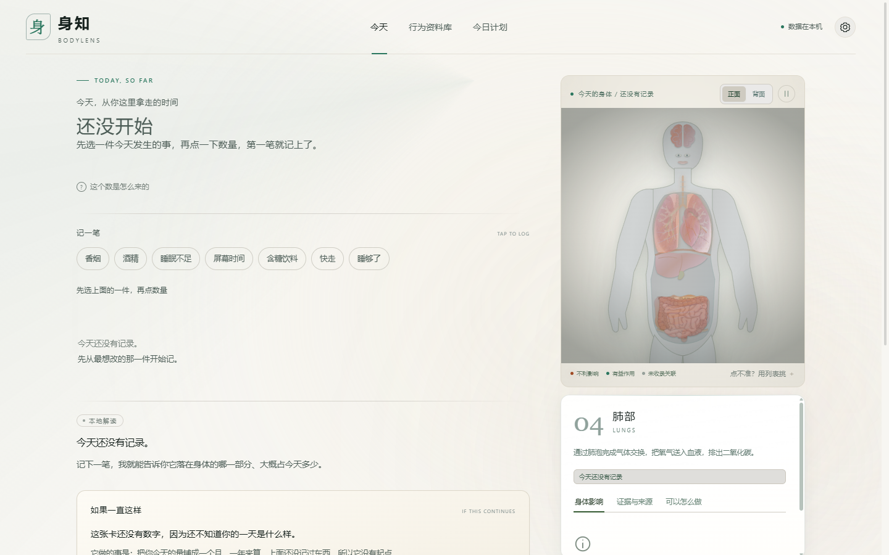
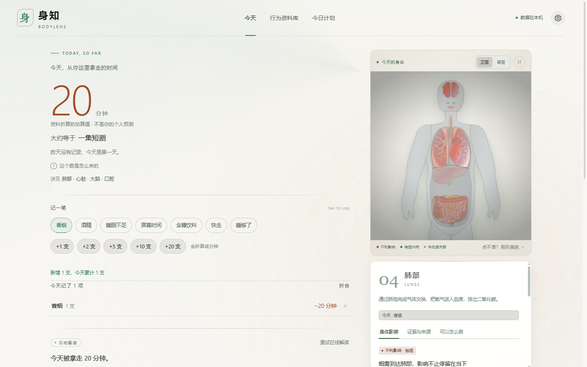
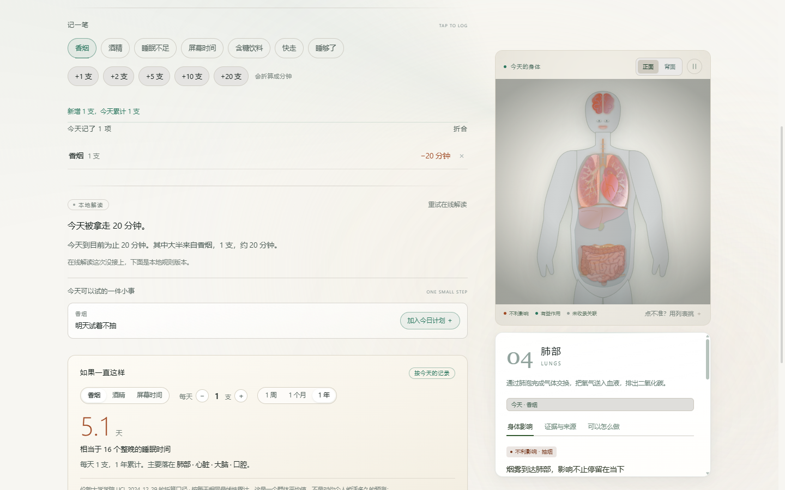
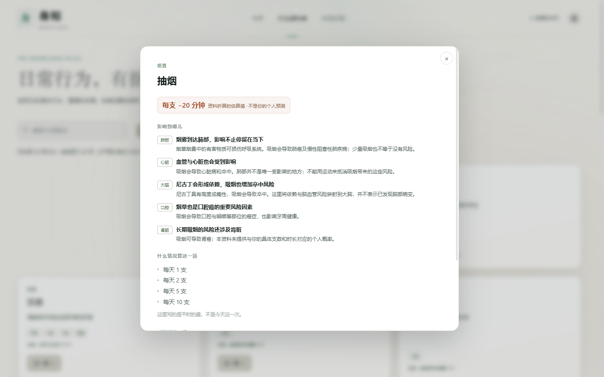
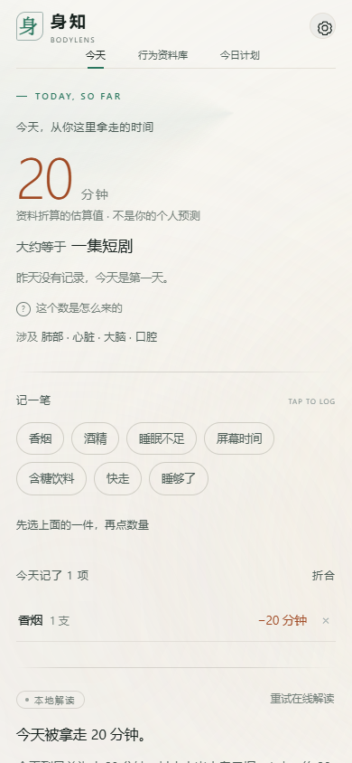

A Ledger of the Body
把今天做的事，算成身体的账。
每个数字都写得出它从哪来，也写得出它有多不确定。
身知 BodyLens 是一个把日常行为的后果换算成时间、并落到具体器官上的网页应用。不需要注册，打开就能用，断网也能继续用。
医学研究给出的结论，大多是「风险上升百分之几十」这种说法。这句话是真的，但对一个二十岁的人几乎不起作用——他看不见「百分之几十」落在自己的哪一天、哪个部位。身知换了一个单位：不是风险，是时间。一支烟约 20 分钟，一包约 400 分钟，按每天一包算一年约 101 天。点一下今天做过的事，这个数字立刻出现，同时告诉用户它出自哪份研究、误差区间有多大、落在肺、心还是脑。
产品里只有一件事在结算，那就是用户自己填进去的行为。系统不加判断，不给建议，也不把好事和坏事兑成一张账单——收益和损耗不抵消。
给那些已经知道「该少抽、该早睡」，但看不动百分比的人。典型场景是晚上十一点，用户回想今天抽了几支烟、坐了几个小时，想知道这到底算不算事。身知在三十秒内给一个具体的数，并诚实地标出这个数的边界。
| 顺序 | 操作 | 看到什么 |
|---|---|---|
| 第一步 | 在「记一笔」里点一件今天发生的事 | 香烟、喝酒、熬夜、久坐、屏幕时间等 30 项，分七个大类 |
| 第二步 | 点一个数量（例如香烟「＋1 支」） | 点下去就入账，没有「提交」按钮。总时间当场变化 |
| 第三步 | 看下面三块内容 | 这个数字等于什么（一集短剧、一小时睡眠）、涉及哪些器官、这一天的解读、如果一直这样会怎样 |
四个页面各有分工，导航里只有三个入口加一个齿轮：今天（记账、看账、看推演）、行为资料库（全部 30 项行为与 12 个公开来源）、今日计划（写下今天想做的一件小事）、数据与设置（导出备份、恢复、动效与景深开关）。

同类产品大多停在「提醒你不要做」和「给你一个百分比」之间。这个作品的全部努力，是把那句话变成一个能对上自己明天的数，同时不丢掉严谨。
data/weights.js 中，每条都带来源、区间和适用条件。代码里有校验：缺了 caveat 的数字在测试阶段直接报错。资料库里没把握的项目——比如含糖饮料——就明确写「没有可信口径」，不拿一个凑数的数字顶上。node_modules、没有 CDN。约 4,800 行代码，npm start 一条命令起本地服务，85 项自动化测试 151 毫秒跑完。评委不需要装任何包就能验证每一条说法。全站只有一个地方调用大模型——「这一天的解读」那段话。它的位置是最后一块，前面所有数字、换算、器官归属都已经在本地算完。AI 做的唯一一件事，是把结论换一种说法。卡片右上角的标签会明确写出这句话是谁说的：「AI 解读」或「本地解读」。
三条约束写在代码里，不是写在文档里：
| 约束 | 实现方式 |
|---|---|
| 密钥不进浏览器 | 前端不直连任何第三方接口，所有请求走同源 /api/interpret，由服务端持有密钥。前端不知道密钥存在。 |
| AI 不算数 | 数值一律由 ledger.js 与 forecast.js 在本地算出。AI 的输出里出现与本地结果不一致的数字，这段输出被判为无效。 |
| 接不上就退回本地 | 无网络、无密钥（返回 503）、限流、超时，一律返回本地规则文案。降级路径是默认路径，在线只是增强。 |
这个项目从第一行代码到上线，是用 AI 结对完成的。这本身不稀奇，稀奇的是过程可回溯：仓库 docs/prompt-log/ 下有 10 条 Prompt 链，每条记的是用户原话 → AI 第一轮输出哪里不对 → 人工怎么纠偏 → 落到哪个提交号。
git show 还原，但不冒充原始证据，按规则只算补充材料。除此之外，演示视频的后半段（2 分 36 秒）是真实协作过程的录屏：三个具体的问题、三次把 AI 的输出否掉、改完再验。这一段不是复述，是当时屏幕上的实际操作。
这个作品对「AI 说完成」这句话是不信任的，所有验收都落在可执行的脚本上。
| 手段 | 规模 | 解决了什么 |
|---|---|---|
| 单元测试 | 85 项 · 151ms | 账本累加、权重口径、情境转换、趋势补齐。口径写错会在测试里直接失败，不会等到用户看见。 |
| 无头浏览器探针 | 50 项断言 | 弹窗开合、锁背景滚动、滚动条替身、降级分支。这些是「看截图看不出来、但用户一碰就坏」的部分。 |
| 提交前体检 | 12 项 · 本地 + 线上各一遍 | 把 README 里的分步流程写成断言，逐条对「应该看到」。2026-10-29 本地 12/12、线上 12/12。 |
| 像素级验收 | 逐帧 | 动效用 getBoundingClientRect() 序列量，不靠截图判断——截图有 100~200ms 延迟，抓不到 100ms 级的过程。 |
上面这些探针脚本大部分是 AI 写的，但「什么算通过」这一条，必须由人来写。第一次跑提交前体检，13 项里有 4 项失败，其中 3 项是断言写错了，不是产品坏了：脚本按自己的想象去页面上找一段文案，而页面上那句话本来就不是那么写的。如果当时是让 AI 判断「通过率 70% 说明有 4 个 bug」，这几处会被当成缺陷去「修」，把好代码改坏。
所以验收脚本里有一条硬规则：失败时先回答「是产品不对，还是判据不对」，判据写在 README 的流程表里，与产品行为一一对应。表对不上时，要么修产品，要么改表并写明原因——没有第三种处理方式。这条规则在 2026-10-29 那次全绿之前，实际拦下过三次「假失败」和一次真实的断网白屏。
官方推荐的是 React / Vue / Node 这一套。这个项目一套都没用，原因不是偏好，是四条硬指标——零依赖、断网可用、十分钟能跑起来、界面不能有明显掉帧——把主流方案全筛掉了。技术上的难点因此不在「用什么框架」，而在「没有框架时怎么保证不乱」。
data/catalog.js 记行为，data/weights.js 记权重、来源、区间与适用条件。这两个文件是唯一的数据来源，任何页面都不许写死分钟数。资料库详情页的数字也是从权重表读的，改口径只改一处，全站同步。这条规则在评审中最容易被验证：全文搜索 「20 分钟」这类字面量，只会在权重表里命中。
整个应用只有一处「账本 → 资料库情境」的转换，在 today.js 的 scenario()。计划页要读今天记了什么，也走这一个函数，不另写一套映射。少一处转换，就少一处不一致——这是把「账本和推演要认同一个数」这条要求变成结构，而不是靠人记住。
「如果一直这样」这张卡把权重逐日累加，得到一周、一个月、一年的区间，不是问模型「大概会怎样」。算一年的推演耗时 2.5 毫秒。这条边界同样有纪律：只有吸烟、饮酒、久坐三项进推演，因为只有这三项有足够扎实的剂量—时间研究；睡眠不足一小时按 11 分钟计，摊到六十年就超出了这个口径能成立的范围，所以哪怕它最抓人，也不进推演。
右栏可点击的人体没有用任何图形库或序列帧，是一组自己调的 SVG 路径：外壳、器官、锚影分三层，每层有各自的克制规则（外壳只做减淡不做变形，器官保留色相，描边负责在浅色背景上撑出轮廓）。十二个器官在同一个坐标系里，点哪块出哪块的详情。这块的教训是「骨架只能做减法」——试图重算坐标让手臂避开躯干，结果手臂穿进了身体。
| 铁律 | 落在哪 |
|---|---|
| 有数字必有 caveat | weights.js 里带校验：缺来源或缺区间的条目过不了测试 |
| 推算要写路径 | 每个推算出来的数带 item.hint，说明是按什么口径算的 |
| 只在尺度内成立 | 推演有白名单，超出研究尺度的项不许进 |
没有框架，就必须自己把框架默认给出的东西补上：模块是立即执行函数加 window.BodyLens 命名空间，index.html 里按依赖顺序手写 <script>；模板是字符串加事件委托，比手写 createElement 短，比引入模板引擎轻；样式统一走一套 CSS 变量，配色只有三个职责，其余交给黑白灰。
代价是要自己守边界。没有类型检查，就用 85 项测试兜底；没有打包器，脚本顺序本身就是依赖声明，改了加载顺序要同时改测试；没有组件，就得靠约定——比如「新增动效一律进 vfx.js，业务代码里不许出现视觉动画」，这条约定写进了 AGENTS.md，也在代码评审时逐条核对过。收益是全站没有一个跨域请求、没有构建产物、没有版本地狱，npm test 跑的是 Node 自带的测试器，连测试框架都没装。
早期版本是三个平级页面：今天、人体、资料库。用户记完一笔账，要点一次导航才能看见这笔记在身体哪里——「话」和「行动」之间隔了一次点击。提交 a113487 把三个页面合并成一页：左边账本、右边人体，改一笔，人体当场亮。
代价是布局代码复杂了不少：一页里六块内容的窄屏顺序要手排（账 → 计划 → 人体 → 推演 → 趋势），而单栏断点下 DOM 顺序又不能真的改，只能用布局树重排。这一步花了比其他改动更多的时间，但它是这次改版里最值的一处——产品的主张「看见后果」本身就是这个布局在表达，不是一个功能项。
以下四张都是线上 body-ledger.com 的真实界面截图，2026 年 10 月 28 日从服务器直接抓取，并核对过本地与线上文件的 md5 一致。完整 8 张见仓库 docs/evidence/screenshots/。




没有。这个作品在本次提交之前，没有在任何地方发表过，也没有参加过任何比赛或获得过任何奖项。
项目从 2026 年 10 月 17 日开始做，10 月 18 日建立 Git 仓库并持续提交，到本文档编制时共 107 次提交（截至 5a408fe）、12 天。它一直只是一个个人的东西，没有对外发布过，也没有投稿到任何平台或期刊。本次是它第一次公开提交，也是第一次接受外部评审。
线上地址 body-ledger.com 是为这次参赛部署的，此前不存在公开可访问的版本。如果评审需要，服务器的部署记录、证书签发时间与 Git 提交时间线可以对上。
不是。这个作品是原创实现，不是在任何一个已有项目的基础上改的。
为了说得更清楚，把「用了别人的东西」和「没用的」分开列一下：
| 项目 | 情况 | 说明 |
|---|---|---|
| 前端框架（React / Vue 等） | 未使用 | 原生 HTML/CSS/JS |
| 图表 / 人体图形库 | 未使用 | 人体是手写 SVG 路径，图表是原生绘制 |
| 第三方运行时依赖、CDN | 零 | 仓库内无 node_modules，全站无跨域请求 |
| UI 组件库 / 模板 | 未使用 | 版式与交互都是自己写的 |
| 字体 | 系统字体 | 使用系统中文字体栈，不分发任何字体文件 |
| 研究数据与结论 | 公开来源 | 12 个公开发表的资料来源，逐条列在资料库里，可点开查看出处 |
关于起点需要如实说明一件事：10 月 17 日之前的早期探索没有建立版本管理，那部分代码在 10 月 18 日作为一条基线一次性纳入了 Git（提交 7f02b82），提交信息里写明了缘由。它是一条基线，不是按功能拆分的历史，也没有伪装成那样。此后 106 次提交是真实的演进过程，每次对应一个可独立描述的改动，可与 docs/prompt-log/ 下的 Prompt 链逐条对照。